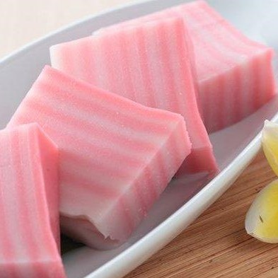

Resep bukan hanya untuk dibaca. Tetapi juga untuk dicoba. Mari kita coba!

Bahan :
Kelapa 1 buah
Tepung beras 500 gram
Tepung kanji 300 gram
Gula pasir 600 gram
Pewarna makanan (sesuai selera)
Air 2000 ml
Cara membuat :
Parut kelapa, lalu peras santannya dengan air. Kemudian rebus santan bersama gula hingga mendidih. Setelah mendidih, diamkan hingga hangat.
Campur santan hangat dengan tepung terigu dan tepung kanji.
Setelah tercampur rata, bagi adonan menjadi 2, kemudian beri pewarna sesuai selera.
Panaskan kukusan.
Siapkan loyang dan beri sedikit minyak, lalu masukkan ke dalam kukusan. Kemudian tuang adonan ke dalam loyang untuk lapisan pertama (setiap lapisan sekitar 250 ml adonan).
Kukus selama 5 menit. Kemudian tuang adonan sebagai lapisan kedua. Ulangi hingga adonan habis.
Setelah matang, angkat loyang dan tunggu hingga dingin.
Potong-potong kue lapis dengan ukuran sesuai selera.
Menurut perkiraan, 1 resep ini dapat menjadi 24 kue lapis.